TECH ICONS
TECNOLOGIES
oakley technologies
branded patents
what it is?
Oakley’s exclusive waterproof fabric technology allows heat and sweat to escape through evaporation while providing a protective barrier against water and wind.
Key benefits
- Waterproof
- Windproof
- Breathable
outcome
Field-tested waterproof protection and moisture management for enhanced comfort.
what it is?
Inspired by the unique, recovery promoting properties of far infrared on the body. When the body recovers, the body and mind feel re-charged, and ready for the next adventure.
what it is?
Hydrolix is a technology behind Oakley’s moisture management system that keeps you cool, dry, and comfortable.
key benefits
- Moisture Absorption
- Moisture-Wicking
- Accelerated Drying Time
how it works
moisture-wicking
Moves sweat away from body to the fabric surface
breathable
Exceptional air flow promotes evaporation
Quick-drying
Increased comfort
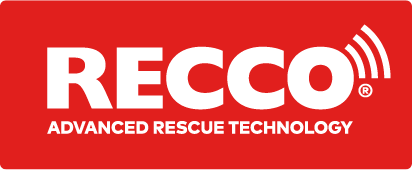
what it is?
A RECCO reflector built into clothing or gear provides a way to be searchable by professional rescue teams with RECCO detectors. The RECCO technology is a global standard for avalanche rescue and handheld detectors are carried by professional rescue teams worldwide. RECCO SAR Helicopter Detectors are also used from air to scan large areas fast for a missing person. The reflectors do not replace personal transceivers and companion rescue but don’t need to be turned on and provide a back-up to always be searchable to professional rescuers.
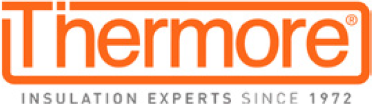
what it is?
Thermore® is a high tech thermal insulation designed to keep your body at its natural warmth. Thermore® is designed to offer soft, lightweight warmth for maximum comfort.
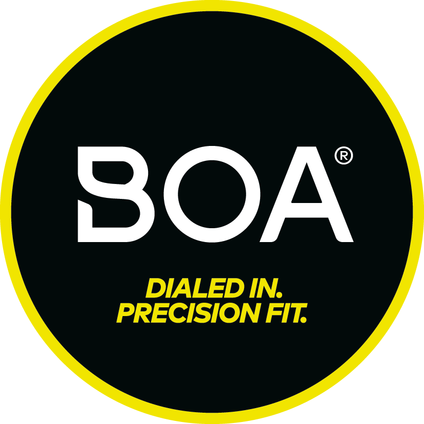
what it is?
BOA’s innovative solutions are designed to deliver micro-adjustable, precision fit engineered to perform in the toughest conditions. Whether participating in the Tour de France or golfing at Augusta, BOA helps consumers perform at their peak.
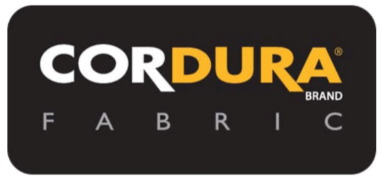
what it is?
With a 55-year heritage of durability, CORDURA® Advanced Fabrics utilize technologies trusted to deliver unmatched protection against tears, scuffs and abrasions. The brand name and reputation are strongly tied to their continual need to innovate and improve our products. CORDURA® Advanced Fabrics support on creating high-quality products that customers count on, as their technologies help products deliver on a promise of comfort, durability and reliability, whether it’s on the job, in the field or simply at play.
what it is?
GORE-TEX® is a membrane that is designed to provide comfort and trusted protection while you are out in the elements, helping you make more of every day.
key benefits
- Durably waterproof
- Very breathable
- Totally windproof
- Insulated
features
- 2L and 3L fabric
- Stretch
what it is?
The GORE-TEX® Pro garments are for outdoor professionals and serious outdoor visionaries who need the most rugged and durable protection available. They are designed to provide optimized breathability and come with the ulitimate Guaranteed To Keep You Dry ™ promise for waterproof protection in a totally windproof product. So you can master even the most extreme situations.
key benefits
- Durably waterproof
- Extremely breathable
- Totally windproof
- Very rugged
- Stretch
- Improved envronmental footprint
features
- 3L design
- Robust inner lining
- Innovative back technology
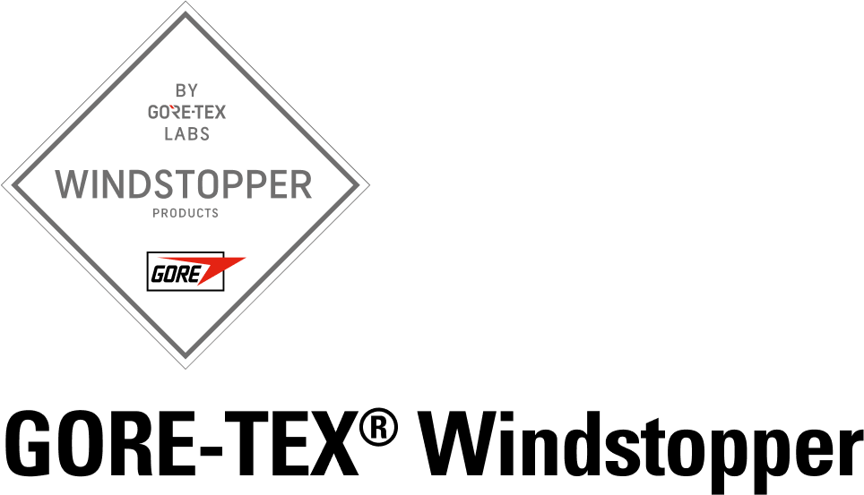
what it is?
Totally windproof. Highly breathable. So you can say yes more often. A cold breeze or light rain can make you want to skip a picnic, your morning jog, or an evening meet-up with friends. GORE-TEX WINDSTOPPER® garments are totally windproof, water resistant, and very breathable—protecting you where other jackets won't. Designed so you can be both comfortable and stylish, now you can say yes more often.
key benefits
- Very breathable
- Totally windproof
- Water resistant
what it is?
Engineered to be soft, lightweight, and thin while keeping you warm, even under extreme conditions, so you can go out and enjoy the cold.
key benefits
- Warm
- Soft
- Lightweight
- Thin
- Durable
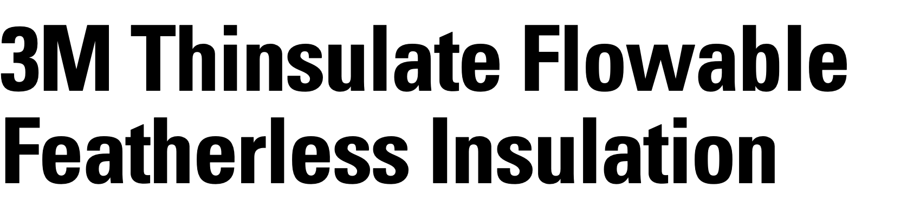
what it is?
A revolutionary featherless insulation product made from 80% recycled material, featuring remarkable washing resiliency and flowability. It’s flexible and lightweight, like its not even there.
key benefits
- Superb warmth
- Wash durability
- Highly compressibility
- Lightweight and puffy
- Ultra soft hand feel
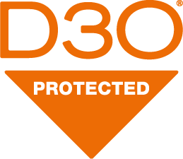
what it is?
D3O® impact protection is worn and trusted by elite mountain bike racers and everyday enthusiasts worldwide. D3O® offers the thinnest and most advanced protection against impact. Their soft, flexible, breathable armor is perfect for riders who want to concentrate on the trail in front of them, while also knowing they’re protected in the event of a fall or crash.
Sustainability
to rethink.
to reinvent.
to repurpose.
to reuse.
The possibility of what we can be begins with preserving what we have.
To rethink, redefine, reinvent, and repurpose. To find new ways to solve problems. To be
resourceful with resources. To have impact on the Committed, without impacting the
world.
It’s not just about what we do, It’s about what we do for others.
sustainable fabrics
HYDROFREE DWR
Durable water repellent (DWR) treatments prevent the outer fabric from picking up water
on its surface to avoid a clammy cold feeling, that comes with wet fabric.
We are strongly committed to improving the environmental footprint of our products. In
that context we have set the goal of eliminating PFCs of Environmental Concern (PFCEC 1)
from the life cycle of our products.
In order to maintain the DWR performance and to ensure a long and useful product life,
users should care for their Hydrofree DWR garment when water no longer beads off.

BETTER COTTON
Oakley is a proud Member of the Better Cotton Initiative. The Better Cotton Initiative
is a global not-for-profit organization and the largest cotton sustainability programme
in the world. BCI exists to make global cotton production better for the people who
produce it, better for the environment it grows in and better for the sector’s
future.
At Oakley we are committed to sourcing a minimum of 50% of our cotton as ‘more
sustainable cotton’ by 2025. ‘More sustainable cotton’ includes cotton sourced as Better
Cotton, RECYCLED, Fairtrade and organic cotton.’
Better Cotton is not physically traceable to end products. However, BCI Farmers benefit
from the demand for Better Cotton in equivalent volumes to those we ‘source’.
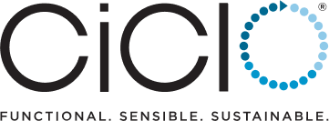
ciclo
CiCLO® additive technology is an easy-to implement upstream solution that allows synthetic (plastic-based) fibers to behave more like natural fibers.
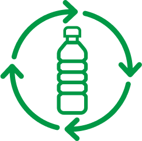
RECYCLED POLYESTER
The materials used in some of our garments are made with polyesters derived from post consumer plastic bottles which help to reduce C02 emission in the air and keep plastic out of landfills. RECYCLED polyester helps create a breathable, lightweight and durable garment.
key benefits
- Absorption
- Wicking
- Air permeability
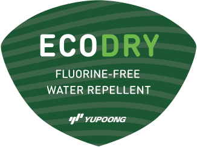
Ecodry
The EcoDry treatment is an environmentally friendly way of adding water repellency to our products without the use of hazardous chemicals.
BIO-EARTH
Bio-Earth is a comprehensive solution aiming to reduce the environmental impact of
textile products.
Biodegradation of a polymeric is chemical degradation brought by the action of naturally
occurring microorganisms such as bacteria and fungi via enzymatic action into metabolic
products of microorganisms such as H2O, CO2, CH4, and biomass.
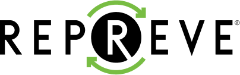
REPREVE
REPREVE® is a high-quality, performance fiber made from recycled materials. It’s an essential ingredient that makes products more earth-friendly. Many of the most recognizable brands in the world use REPREVE.